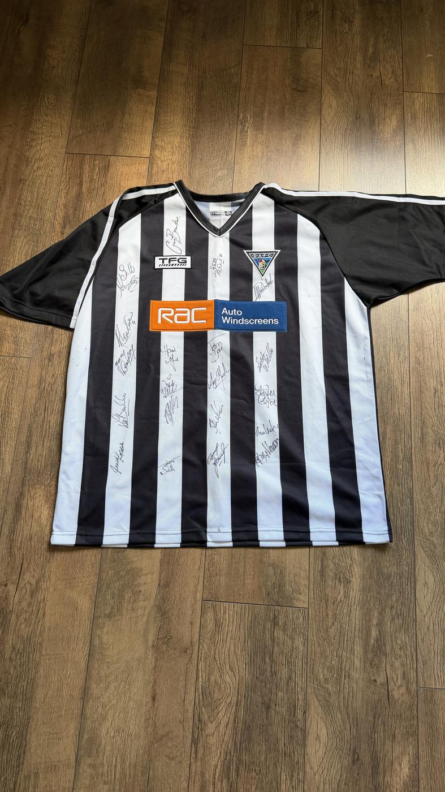

SoldTap the photo for full size · tap thumbnails for more angles
Dunfermline Athletic
£35 sold
This item has been sold
Signed · Low confidence
Believed signed by: Approx. 18-20 signatures covering the full front of the shirt, consistent with a full-squad signing. Handwriting is mostly cursive scrawl and largely illegible; a few partial reads look like they could include surnames such as Bullen, Skinner, or similar common Scottish-football surnames, but this is a low-confidence visual guess only, not a confirmed identification of any individual player.
Signed in person and witnessed by the collection's owner, who confirms this signature is genuine, not printed. Close-up photos are shown so you can see the signature for yourself.
Black and white striped Dunfermline Athletic home shirt by TFG with the RAC Auto Windscreens sponsor, dating it to roughly 2001-2005 - the era of the club's run to the 2004 Scottish Cup Final. The front carries around 18-20 signatures consistent with a full squad signing; the handwriting is mostly illegible and the signatures are unauthenticated, so please study the photographs before bidding. The shirt is clean and looks unworn, though the ink has faded to a grey-silver tone in places.
Shirt appears clean and unworn-looking with no obvious staining, though signature ink has faded to grey/silver tone in places, suggesting some age. Assessed from photo only.
Each one has a Buy Now button that opens an email with the item ID filled in - send it and I'll confirm it's still available and reply with payment details. You can also email terracearchive@icloud.com directly with the item ID (e.g. FP-0042 or MEM-0011) if you have a question first, or to buy several items in one go. Also open to job-lot offers - the whole collection, all programmes, or any other grouping you'd like - get in touch to discuss.